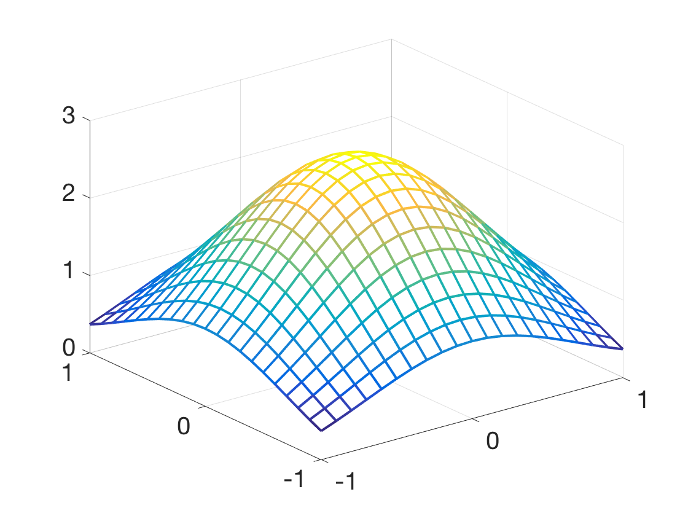

Additional Examples 8.3
1 Prove that \(u(x,y)=e^{1-x^2-y^2}\) is the solution on \([-1,1]\times [-1.1]\) of the boundary value problem
\[ \left\{
\begin{array}{l}
\Delta u = 4(x^2+y^2-1)u\\
u(x,-1)=u(x,1)=e^{-x^2}\\
u(-1,y)=u(1,y)=e^{-y^2}
\end{array} \right.. \]
Calculate the partial derivatives
\begin{eqnarray*}
u_x &=& -2xe^{1-x^2-y^2}\\
u_{xx} &=& -2e^{1-x^2-y^2}-2x(-2x)e^{1-x^2-y^2} = (4x^2-2)e^{1-x^2-y^2}\\
u_y &=& -2ye^{1-x^2-y^2}\\
u_{yy} &=& -2e^{1-x^2-y^2}-2y(-2y)e^{1-x^2-y^2} = (4y^2-2)e^{1-x^2-y^2}
\end{eqnarray*}
Then \(\Delta u = u_{xx}+u_{yy} = (4x^2+4y^2-4)e^{1-x^2-y^2} = 4(x^2+y^2-1)u\) as required.
Checking the boundary conditions,
\begin{eqnarray*}
u(x,-1) &=& e^{1-x^2-(-1)^2} = e^{-x^2}\\
u(x,1) &=& e^{1-x^2-(1)^2} = e^{-x^2}
\end{eqnarray*}
and similarly for \(u(-1,y)\) and \(u(1,y)\).
2 Use the Finite Element Method with \(h=k=0.1\) to approximate the solution of the boundary value problem in Additional Exercise 8.3.1. Plot the solution on the square \([-1,1]\times [-1,1].\)
The poissonfem.m code can be adapted to solve the boundary value problem (8.46). In this case, we set \(f(x,y)=0, r(x,y)=4(1-x^2-y^2), g_1(x) = g_2(x)=e^{-x^2},
\) and \(g_3(y) = g_4(y)=e^{-y^2}. \) We ensure \(h=k=0.1\) by setting \(M=N=20.\) The plot of the solution follows.
